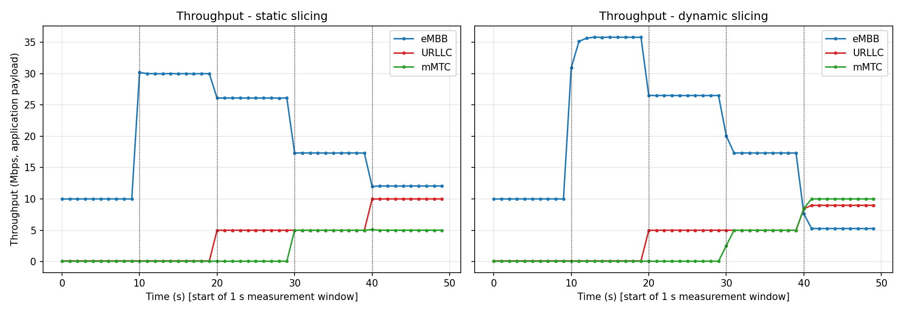
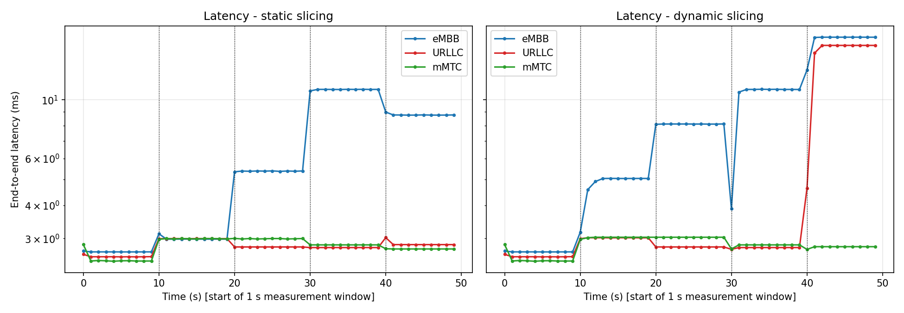
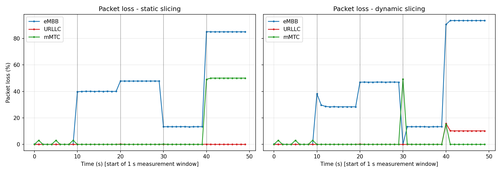
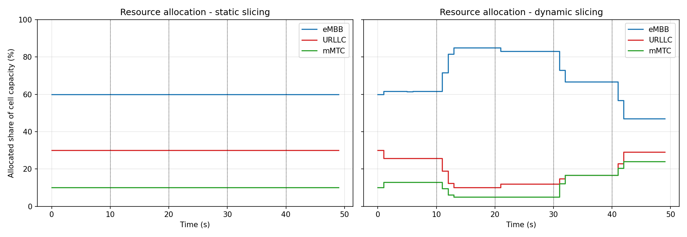
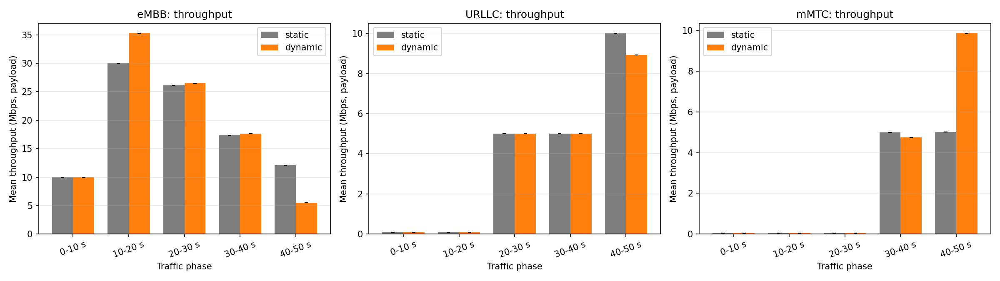
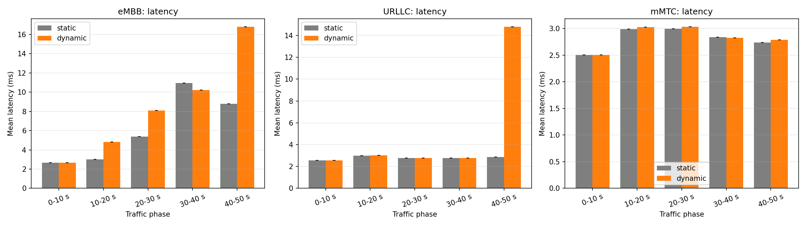
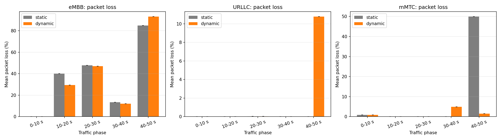
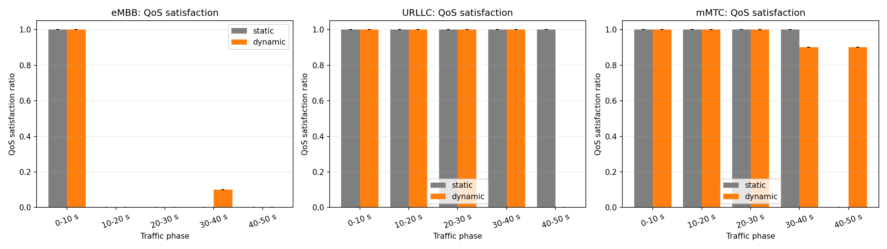
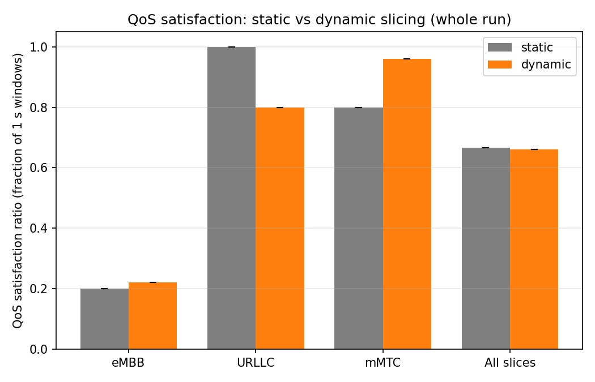

5G Network Slicing with Dynamic Traffic: Static vs Dynamic Slicing
NS-3 / 5G-LENA simulation results. Click any plot to enlarge. Dotted vertical lines mark the traffic phase changes (10, 20, 30, 40 s).
What are eMBB, URLLC and mMTC?
5G serves very different kinds of traffic on the same radio network. A network slice is a logical share of the network reserved for one kind of traffic, so that each kind gets the quality it needs. This project simulates three slices.
eMBBEnhanced Mobile Broadband
Large amounts of data for people: video streaming, downloads, video calls.
Needs: high throughput (many Mbps), moderate delay is acceptable.
Here: 2 UEs sending high-rate UDP data, from 10 up to 80 Mbps in total.
Good result: throughput close to the offered load.
URLLCUltra-Reliable Low-Latency Communication
Small but critical messages where delay and loss are not acceptable: industrial control, remote surgery, vehicle safety.
Needs: very low latency (limit used here: 10 ms) and almost no packet loss.
Here: 2 UEs sending small 100-byte packets at high frequency, from 0.1 up to 10 Mbps in total.
Good result: latency under 10 ms and loss under 1 %.
mMTCMassive Machine-Type Communication
Very many small devices that each send little data now and then: sensors, meters, trackers (IoT).
Needs: many connected devices, low data rate per device, efficient use of resources.
Here: 10 UEs sending periodic 100-byte packets, from 0.05 up to 10 Mbps in total.
Good result: nearly all packets delivered (loss under 5 %).
Static vs dynamic slicing. In both experiments the cell capacity is divided between the three slices, starting at eMBB 60 % / URLLC 30 % / mMTC 10 %.
In static slicing these shares never change. In dynamic slicing a rule-based controller re-checks demand and QoS every second and moves capacity to the slice that needs it.
The question these plots answer: does adapting the shares to changing traffic give better QoS than keeping them fixed?
The traffic scenario (what changes over time)
Traffic changes every 10 seconds. These changes are the reason for the jumps you see in the plots.
Time
eMBB
URLLC
mMTC
Situation
0–10 s
10 Mbps
0.1 Mbps
0.05 Mbps
Normal traffic
10–20 s
50 Mbps
0.1 Mbps
0.05 Mbps
eMBB spike
20–30 s
50 Mbps
5 Mbps
0.05 Mbps
URLLC spike
30–40 s
20 Mbps
5 Mbps
5 Mbps
mMTC spike
40–50 s
80 Mbps
10 Mbps
10 Mbps
Heavy mixed traffic
How to read any line plot. A line that goes up or down is only meaningful in context. First check what the traffic was doing at that moment (table above): a throughput line that rises at 10 s is mostly the offered load rising, not an improvement in the network.
The real signal is whether the line follows what was offered, and how static and dynamic differ for the same phase. Gaps in a line mean nothing was received in that window.
1. Slice performance over time
Each plot has two panels: left = static slicing, right = dynamic slicing, with one coloured line per slice (blue eMBB, red URLLC, green mMTC), measured in 1-second windows. Shaded bands, if present, show variation between random seeds.
Plot 1: Throughput vs Time (Mbps)
What it shows: how much application data each slice actually delivered to its devices each second. It is the “achieved” rate, to compare with the offered traffic in the table above.

Line rising: the slice is delivering more data. Usually because its traffic increased at a phase change. If the line rises at a phase change in dynamic but stays flat in static, the controller gave that slice extra capacity.
Line falling: either the traffic dropped (a normal phase change), or the slice is being limited: its share of capacity is too small for the demand, so data is held back. A fall that does not match a traffic drop signals starvation.
Plot 2: Latency vs Time (ms, logarithmic axis)
What it shows: the average time a packet takes from the remote server to the device, per slice, each second. The vertical axis is logarithmic: each gridline is ten times the previous one, so large delays are compressed. A gap means no packet arrived in that window.

Line rising: packets are waiting longer, typically because queues build up when a slice sends more than it is allowed or more than the radio can carry. For URLLC, a line above 10 ms means its delay requirement is violated.
Line falling: queues are draining and packets get through quickly. Lower is better. A drop in latency after a phase change in dynamic slicing shows the controller relieved congestion for that slice.
Plot 3: Packet Loss vs Time (%)
What it shows: the percentage of packets sent for a slice that did not arrive in that second. Packets rejected because the slice exceeded its capacity share count as lost.

Line rising: demand exceeds what the slice is allowed or able to deliver, so more packets are dropped. For URLLC, more than 1 % is a violation; for mMTC, more than 5 %.
Line falling: more of the offered data gets through. Zero means nothing was lost. Lower is better. Small spikes right after a phase change can come from packets still in transit when the window ends.
2. Resource allocation over time
The share of the cell capacity granted to each slice. The three shares always add up to 100 %. This share is enforced as a rate limit per slice (not as a measured count of radio resource blocks).
Plot 4: Resource Allocation vs Time (%)
What it shows: how the controller divides capacity. Left (static): three flat lines at 60 / 30 / 10 %. Right (dynamic): steps showing the controller reallocating each second.

Line rising: that slice is receiving a larger share, because its demand grew or its QoS was being violated (URLLC gets priority on a latency or loss violation). Another line must fall by the same amount.
Line falling: the slice's share is shrinking because its demand is low, freeing capacity for busier slices. It never falls below its minimum guaranteed share. A flat line means no change was needed.
3. Static vs dynamic comparison (per traffic phase)
Bar charts, one panel per slice. Each group of bars is one 10-second traffic phase; grey = static, orange = dynamic. Each bar is the average over that phase (and over seeds); bars start at zero and the thin error bars show variation between seeds. Compare the two bars of the same group: the difference is the effect of dynamic slicing in that phase.
Plot 5: Throughput, static vs dynamic
What it shows: average delivered data rate per slice and phase for the two strategies.

Taller orange bar: dynamic slicing delivered more data than static in that phase. Higher is better. Bars of equal height mean the static share was already enough.
Shorter orange bar: dynamic delivered less, typically because capacity was moved to another slice that needed it more. This is a trade-off between slices, not necessarily a failure.
Plot 6: Latency, static vs dynamic
What it shows: average packet delay per slice and phase. Pay most attention to the URLLC panel against its 10 ms requirement.

Taller bar: packets waited longer. Lower is better. If the orange bar is taller than the grey one, dynamic slicing worsened delay for that slice and phase.
Shorter bar: faster delivery. If the orange bar is shorter, dynamic slicing reduced delay, most valuable for URLLC.
Plot 7: Packet loss, static vs dynamic
What it shows: average percentage of packets lost per slice and phase.

Taller bar: more packets lost. Lower is better. A taller orange bar means dynamic slicing lost more for that slice.
Shorter bar: fewer packets lost. A shorter orange bar in the eMBB spike or heavy-traffic phases means the controller prevented drops by giving the slice more capacity.
4. QoS satisfaction
A slice counts as “satisfied” in a one-second window when it meets its own requirement: eMBB gets at least 90 % of its offered throughput within 100 ms; URLLC has latency up to 10 ms and loss up to 1 %; mMTC has loss up to 5 %. The ratio is the fraction of windows that were satisfied: 1.0 means always, 0 means never.
Plot 8: QoS satisfaction per traffic phase
What it shows: the satisfaction ratio for each slice in each phase, static (grey) versus dynamic (orange). It shows when each strategy fails.

Taller bar: the slice met its QoS more often. Higher is better; 1.0 is the maximum.
Shorter bar: the slice violated its requirement in more windows. A short grey bar with a tall orange one in the same phase shows where dynamic slicing helped.
Plot 8b: QoS satisfaction, whole run
What it shows: the same ratio averaged over the entire 50 s run, per slice and for all slices together. This is the summary comparison.

Taller orange bar: dynamic slicing satisfied QoS in a larger share of the run. Higher is better. The “All slices” group is the single overall indicator.
Shorter orange bar: dynamic slicing satisfied QoS less often for that slice, which can happen when it gives up capacity to protect another slice.
Reading the whole page together. Dynamic slicing is better only if it improves the slices that were struggling (higher throughput or QoS, lower latency or loss in the spike phases) without causing a worse outcome elsewhere. Compare each phase with the traffic table, and compare Plot 4 (what the controller did) with Plots 1–3 (what happened to the traffic). If static and dynamic look the same, the cell was not overloaded enough for re-allocation to matter. All figures come from a simulation, not a real 5G network.